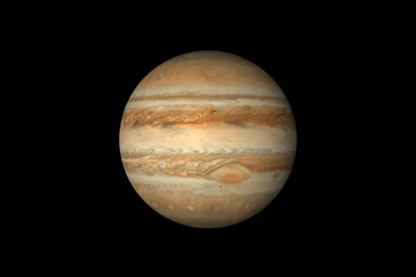

Júpiter
Júpiter es el quinto planeta desde el Sol y el más grande del sistema solar, un gigante gaseoso de hidrógeno y helio sin superficie sólida definida. Destaca por su atmósfera turbulenta con bandas nubosas, ciclones y la centenaria Gran Mancha Roja, además de tener el campo magnético más potente (con auroras polares) y más de 70 lunas, incluidas las galileanas: Ío, Europa, Ganimedes y Calisto.
Más información sobre Júpiter →